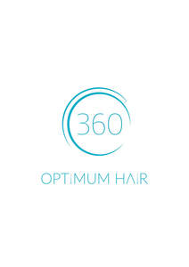

Trade Mark Journal No.2025/013 28 March 2025
UK00004172370 12 March 2025 (3,5,10,21,24,26,35,44)

- Class 3
- Shampoo; Hair shampoo; Shampoos; Hair shampoos; Non-medicated hair shampoos; Hair lotion; Non-medicated shampoos; Hair conditioner; Hair moisturising conditioners; Hair lotions; Hair rinses [shampoo-conditioners]; Hair conditioners; Hair styling lotions; Non-medicated hair lotions; Cosmetic hair lotions; Hair cosmetics; Hair serums; Oils for hair conditioning; Hair care lotions; Hair tonic [non-medicated]; Conditioners for treating the hair; Hair tonic; Hair oils; Hair strengthening treatment lotions; Hair balm; Hair gel; Cosmetic preparations for the hair and scalp; Hair nourishers; Hair oil; Hair tonics; Hair pomades; Hair liquids; Hair rinses; Hair masks; Beauty preparations for the hair; Hair liquid; Hair cream; Hair moisturisers; Hair styling gel; Hair balms; Wax treatments for the hair; Hair creams; Hair emollients; Hair protection lotions; Hair protection gels; Hair gels; Hair moisturizers; Hair care serum; Hair care serums; Styling sprays for the hair; Cuticle conditioners; Conditioners for use on the hair; Conditioners in the form of sprays for the scalp; Conditioning creams; Dandruff shampoo; Conditioning preparations for the hair; Emollient shampoos; Hair treatment preparations; Hair preparations and treatments; Hair preservation treatments for cosmetic use; Non-medicated scalp treatment cream; Hair care creams; Non-medicated hair treatment preparations for cosmetic purposes; Cosmetics for the treatment of dry skin; Hair care preparations; Scalp treatments (Non-medicated -); Hair care creams [for cosmetic use]; Hair care masks; Cosmetic hair care preparations; Hair sprays; Shampoos for human hair; Hair care lotions [for cosmetic use]; Hair grooming preparations; Hair tonic [for cosmetic use]; Hair balsam; Non-medicated balm for hair; Hair wax; Exfoliants; Exfoliating scrubs for cosmetic purposes; Exfoliant creams; Exfoliating scrubs for the face; Exfoliating scrubs for the body; Exfoliating creams; Exfoliants for the care of the skin; Cosmetic stamps, filled.
- Class 5
- Medicated shampoo; Medicated shampoos; Medicated hair lotions; Hair growth stimulants; Medicinal hair growth preparations; Hair growth preparations (Medicinal -); Medicinal preparations for stimulating hair growth; Medicinal hair growing preparations; Scalp treatments (Medicated -); Medicated hair care preparations; Medicated preparations for skin treatment; Medicated skin lotions; Niacinamide preparations for the treatment of acne; Medicated skin creams.
- Class 10
- Scalp massagers; Dermarollers; Needles for injections.
- Class 21
- Shampoo brushes; Shampoo dispensers; Hair brushes; Hair combs; Scalp scratchers; Large-toothed combs for the hair; Wide tooth combs for hair; Exfoliating brushes; Cosmetic stamps, sold empty; Skin care cream dispensers; Cosmetic apparatus for microdermabrasion.
- Class 24
- Turban towels for drying hair; Textile hair drying towels.
- Class 26
- Hair scrunchies.
- Class 35
- Retail services in relation to hair products; Online retail store services relating to cosmetic and beauty products.
- Class 44
- Hair restoration; Hair treatment; Shampooing of the hair; Cosmetic treatment for the hair; Hair treatment services; Medical services for treatment of the skin; Hair salon services; Hair dressing salon services; Cosmetic treatment; Hair care services; Hair replacement; Hair restoration services; Microneedling treatment services; Cosmetic laser treatment of skin; Laser skin rejuvenation services; Cosmetic laser treatment for hair growth.
360 Hair Group Ltd